3.5 MHz80 m · HF
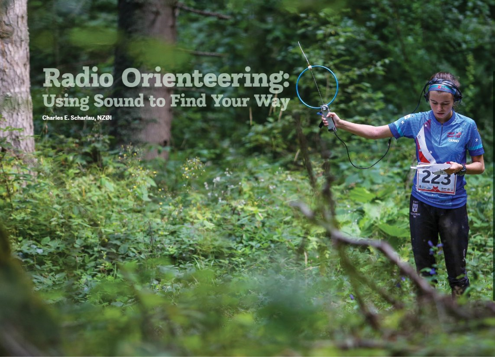
3.5 MHz 루프 수신기로 숲을 탐색하는 선수 (80 m receiver). 사진: ARRL On the Air 2023년 3·4월호, Charles E. Scharlau(NZ0I) 기사
- 주파수
- 3.510 – 3.600 MHz
- 송신 출력
- 1 – 5 W
- 전파 형식
- A1A 무변조 반송파 단속 (CW)
- 송신 안테나
- 수직
- 수신 안테나
- 페라이트 막대 또는 루프 + 보조 휩
지도와 나침반, 방향 탐지 수신기를 들고 숲속에 숨은 송신기를 찾아 달리는 경기입니다. 규정부터 전파의 성질, 수신기 다루는 법, 실전 탐색 순서까지 한 편에 정리했습니다.
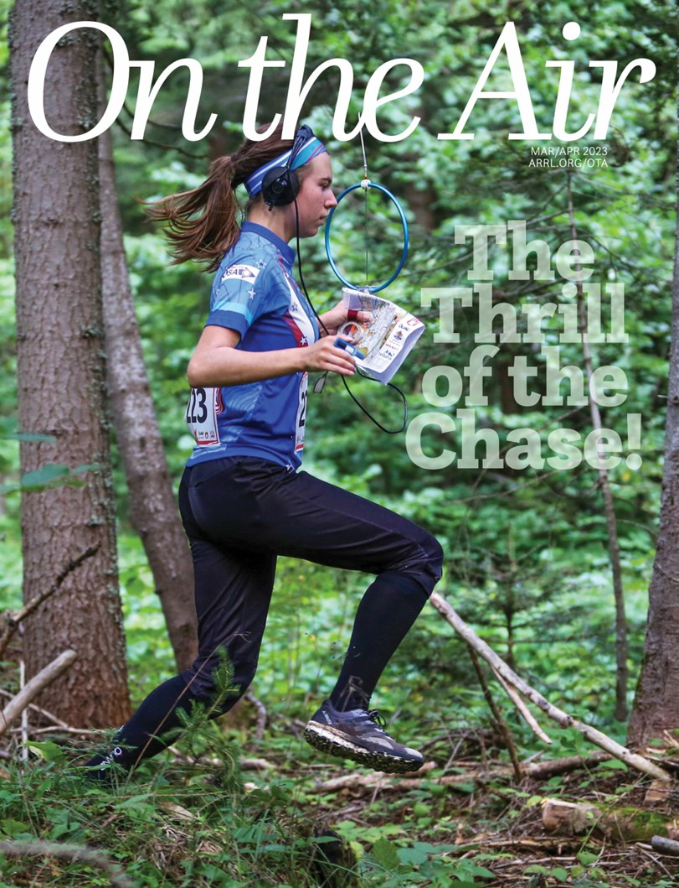
역사, 두 개의 대역, 송신기 식별 부호, 참가 부문
ARDF(Amateur Radio Direction Finding, 아마추어 무선 방향 탐지)는 숲이나 공원에 숨겨 둔 소형 송신기를 방향 탐지 수신기로 찾아내는 경기입니다. 선수는 출발할 때 오리엔티어링 지도를 받지만, 지도에는 송신기의 위치가 표시되어 있지 않습니다. 수신기로 신호가 오는 방향을 재고, 그 방향을 지도에 선으로 그어 가며 위치를 좁혀 나갑니다.
정해진 송신기를 모두 찾고 결승선을 통과하기까지 걸린 시간이 기록이 됩니다. 달리기 체력, 지도 읽기, 무선 기술이 함께 요구되기 때문에 흔히 “라디오 오리엔티어링(Radio Orienteering)” 또는 “여우 사냥(Fox hunting)”이라고도 부릅니다. 송신기를 여우(Fox)라고 부르는 것도 여기서 나온 말입니다.
ARDF는 유럽에서 시작되었습니다. 1950년대 스웨덴에서 이미 전국 대회가 열렸고, 1961년 유럽선수권이 시작되었습니다. 1980년부터는 세계선수권으로 이름을 바꾸어 대략 2년마다 열리고 있습니다. 아시아·태평양 지역(IARU 제3지역)의 선수권은 1993년 중국에서 처음 열렸습니다.
ARDF는 단파(HF)의 3.5 MHz 대역(파장 약 80 m)과 초단파(VHF)의 144 MHz 대역(파장 약 2 m)에서 열립니다. 국제 대회의 클래식 경기는 두 대역을 하루씩 번갈아 치릅니다. 대역마다 전파가 산과 숲을 지나는 방식이 전혀 다르기 때문에 수신기도, 탐색 요령도 다릅니다. 수신기 이름에 ‘145’가 붙어 있다면 이 2 m 대역용이라는 뜻입니다.

3.5 MHz 루프 수신기로 숲을 탐색하는 선수 (80 m receiver). 사진: ARRL On the Air 2023년 3·4월호, Charles E. Scharlau(NZ0I) 기사
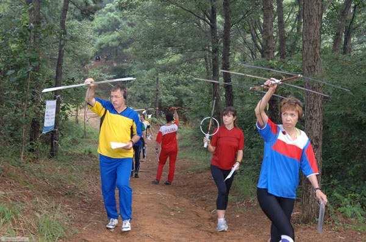
제14회 전파방향탐지대회(ARDF)에서 야기 안테나 수신기로 방향을 재는 선수들 (2 m receiver). 사진: 대회 위원회 제공
주파수 범위는 IARU 제1지역 규정 기준입니다. 실제 대회 주파수는 지역 밴드 플랜에 따라 달라질 수 있으며, 대회 안내문(Bulletin)에 공지됩니다.
송신기는 자기 번호를 모스 부호로 반복해서 보냅니다. 모든 부호가 MO로 시작하고, 그 뒤에 붙는 글자의 점(·) 개수가 송신기 번호입니다. E는 점 하나, I는 둘, S는 셋, H는 넷, 숫자 5는 다섯입니다. 모스 부호를 몰라도 마지막 점의 개수만 세면 몇 번 송신기인지 알 수 있습니다.
결승 비컨(Finish beacon)은 MO만 보내고, 다른 송신기와 다른 주파수에서 쉬지 않고 발신합니다. 송신기를 다 찾은 뒤 비컨 신호를 따라가면 결승 통로 입구에 닿습니다.
들어보기 소리는 10 WPM 속도와 800 Hz 음으로 만든 예시입니다. 규정상 송신 속도는 분당 8–15 단어(8–15 WPM) 범위입니다.
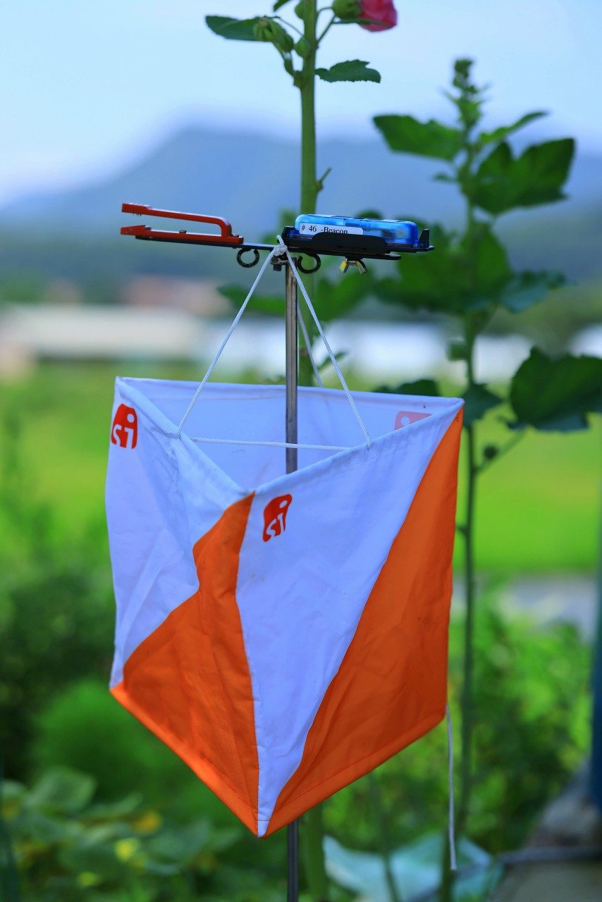
클래식 경기에서는 송신기 안테나에서 4 m 이내에 이 깃발을 세우고, 깃발 가까이에 기록 장치를 두 개 이상 둡니다. 선수는 손가락에 끼운 전자 카드(SI 카드)를 기록 장치에 꽂아 방문을 기록합니다. 깃발이나 기록 장치에는 송신기 번호와 대역 표시가 붙어 있으니, 기록하기 전에 번호가 맞는지 확인합니다.
참가 부문은 성별(W 여자, M 남자)과 나이로 나뉩니다. 숫자 19는 “19세 이하”, 21은 “나이 무관”, 그 위의 숫자는 “그 나이 이상”을 뜻합니다. 나이는 그해에 몇 살이 되는지를 기준으로 셉니다. 부문마다 찾아야 할 송신기 수와 코스 길이가 다르고, 나이가 많은 부문일수록 짧아집니다. 아래 그래프는 국제 규정의 클래식 기준입니다.
처음이라면 국내 대회에는 입문자용 부문이나 송신기 수를 줄인 코스가 따로 마련되는 경우가 많습니다. 신청 전에 대회 요강에서 부문과 배정 송신기를 확인합니다.
클래식 · 스프린트 · 폭스오링: 무엇이 같고 무엇이 다른가
국제 규정에는 세 가지 종목이 있습니다. 세 종목 모두 송신기를 찾는 순서는 선수가 정하고, 결승 비컨은 마지막에 들릅니다. 차이는 송신기가 언제 발신하는지, 신호가 얼마나 멀리까지 들리는지, 지도에 무엇이 표시되는지에 있습니다. 먼저 두 종목의 송신 주기를 다이얼로 비교해 봅니다.
두 다이얼은 같은 배속으로 돕니다. 실제 1분을 8초로 줄여, 클래식은 한 칸 8초, 스프린트는 한 칸 1.6초입니다. 폭스오링은 모든 송신기가 쉬지 않고 발신하므로 다이얼이 필요 없습니다.
ARDF의 기본 종목입니다. 송신기 다섯 대가 같은 주파수를 쓰면서 1분씩 차례로 발신합니다. 1번이 0분부터 1분까지, 2번이 1분부터 2분까지 보내고, 5번이 끝나면 다시 1번으로 돌아갑니다. 그래서 한 송신기의 방향을 잴 수 있는 시간은 5분 중 1분뿐이고, 나머지 4분 동안은 그 송신기 소리를 들을 수 없습니다. 이 1분 안에 방향을 재고 지도에 선을 긋는 것이 클래식의 핵심 기술입니다.
지도에는 출발점, 결승 비컨, 결승 통로, 결승선만 표시되고 송신기 위치는 없습니다. 코스는 부문에 따라 4–12 km 규모로, 송신기는 출발점에서 750 m 이상, 송신기끼리는 400 m 이상 떨어뜨려 놓습니다. 각 송신기에는 앞에서 본 주황·흰색 깃발이 있습니다.
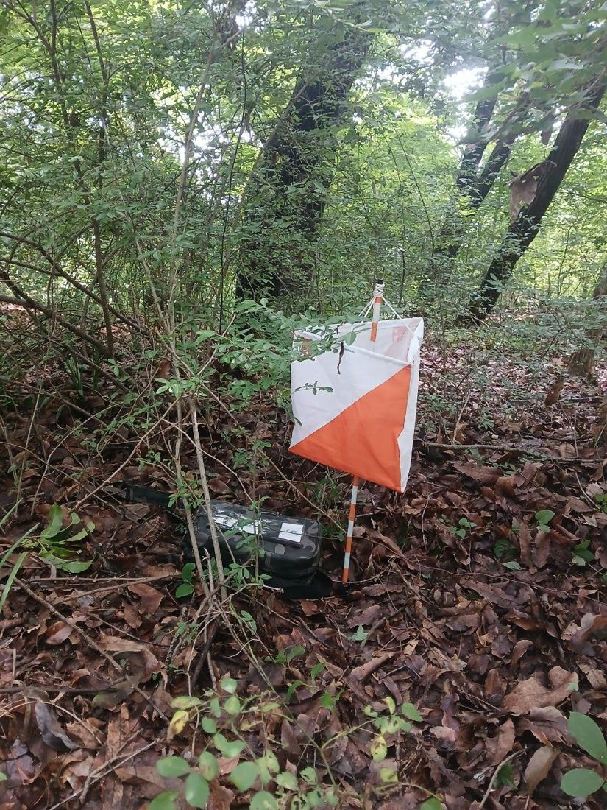
짧고 빠른 종목입니다. 우승 기록이 15분 안팎이 되도록 코스를 짜고, 3.5 MHz 대역에서만 열립니다. 송신 주기가 1분으로 줄어 송신기마다 12초씩 발신합니다. 12초 안에 방향을 판단해야 하므로 클래식보다 훨씬 바쁩니다.
코스는 두 개의 고리(루프)로 이루어집니다. 첫 고리에서 느린 송신기 1–5번을 찾고, 관람 지점(Spectator control, S)을 지나 관람 통로를 달린 뒤, 두 번째 고리에서 빠른 송신기 1F–5F번을 찾습니다. 두 무리는 주파수와 부호 속도가 다릅니다. 마지막으로 결승 비컨을 거쳐 결승선에 들어옵니다. 송신 출력이 0.3–1 W로 낮고, 들판의 송신기에는 깃발 대신 빨강·흰색 줄무늬 받침대만 있습니다.
오리엔티어링에 가장 가까운 종목입니다. 출발 후 받는 지도에 송신기의 대략적인 위치가 원으로 그려져 있습니다. 선수는 지도만 보고 원 근처까지 달려간 뒤, 약한 신호가 들리는 곳부터 수신기로 찾아 들어갑니다. 3.5 MHz 대역에서 열리고, 모든 송신기가 쉬지 않고 발신합니다.
대신 송신기 출력이 아주 약합니다. 실제로는 250 m쯤부터 약한 신호가 들리기 시작하고, 그때부터 정밀 탐색에 들어갑니다. 그래서 원 근처까지는 지도 실력으로 가야 합니다. (규정은 출력을 와트가 아니라 들리는 거리로 정해, 30 m에서는 또렷이 들리고 250 m에서는 들리지 않게 맞춥니다.) 결승 비컨만 보통 출력으로 발신합니다. 깃발은 결승 비컨에만 있고, 송신기 옆 1 m 이내에 기록 장치가 놓입니다.
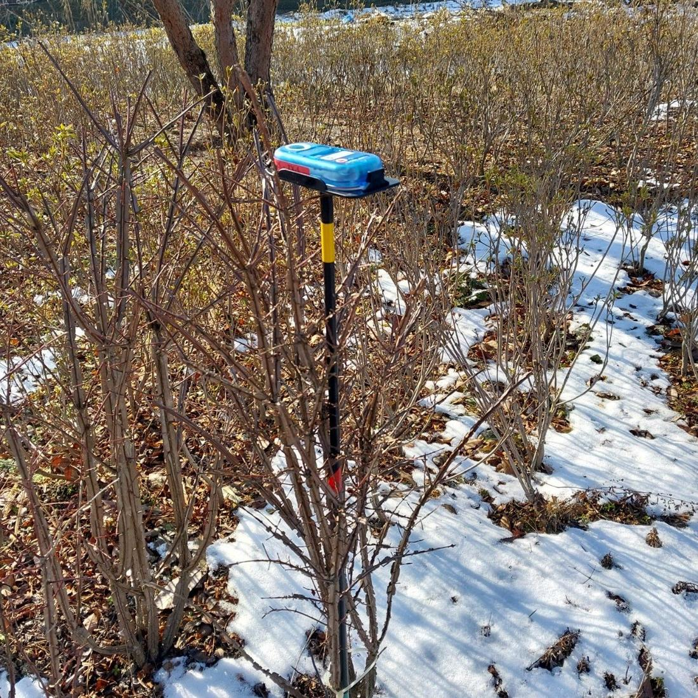
| 항목 | 클래식 | 스프린트 | 폭스오링 |
|---|---|---|---|
| 대역 | 3.5 MHz, 144 MHz | 3.5 MHz | 3.5 MHz |
| 송신 방식 | 5분 주기, 1분씩 교대 | 1분 주기, 12초씩 교대 (두 무리) | 모든 송신기 상시 발신 |
| 송신 출력 | 3.5 MHz 1–5 W 144 MHz ERP 0.25–1 W | 0.3–1 W | 극히 약함, 약 250 m부터 들림 |
| 지도 축척 | 1:10,000 · 1:15,000 | 1:4,000 · 1:5,000 | 1:10,000 · 1:15,000 |
| 지도의 송신기 | 표시 없음 | 표시 없음 | 대략 위치를 원으로 표시 |
| 송신기 간격 | 400 m 이상 | 100 m 이상 | 250 m 이상 |
| 깃발 | 모든 송신기 | 관람 지점 · 결승 비컨만 | 결승 비컨만 |
| 가장 필요한 능력 | 짧은 발신 시간 안의 방향 측정과 작도 | 12초 판단, 빠른 전환 | 지도 읽기와 근거리 탐지 |
마지막 줄은 규정이 아니라 종목 성격을 요약한 것입니다.
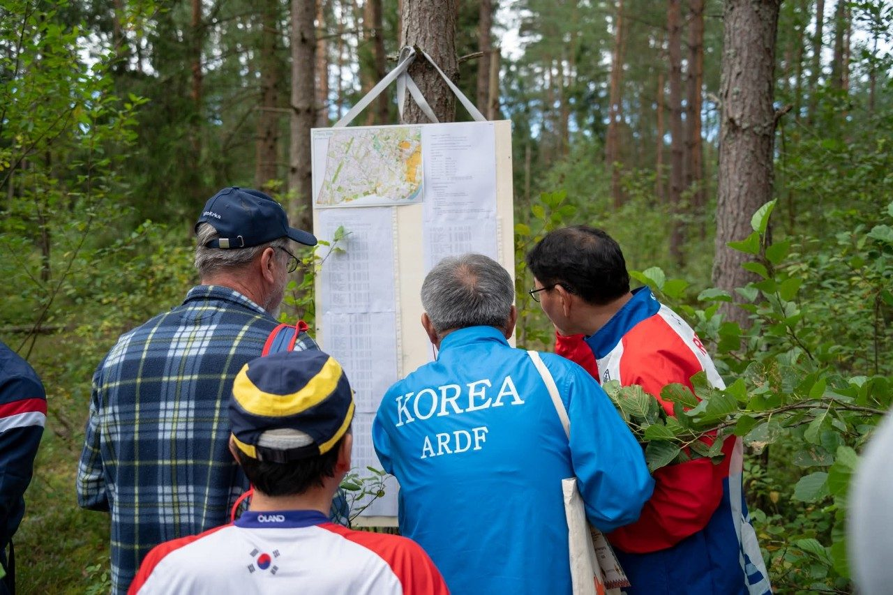
파장의 크기, 산을 넘는 3.5 MHz, 그림자를 만드는 144 MHz, 반사파와 허상 피크
같은 숲, 같은 산에서 경기를 해도 3.5 MHz와 144 MHz의 신호는 전혀 다르게 들립니다. 3.5 MHz는 산 뒤에서도 또렷하게 들리고 방향도 비교적 정직합니다. 144 MHz는 능선 하나에 신호가 크게 약해지고, 바위벽에서 튕겨 온 신호가 엉뚱한 방향을 가리키기도 합니다. 이 차이는 대부분 파장의 크기에서 나옵니다.
전파는 1초에 약 30만 km를 진행합니다. 이 속도를 주파수로 나누면 한 번 진동하는 동안 나아가는 거리, 곧 파장(λ)이 나옵니다. MHz 단위로는 λ(m) = 300 ÷ f(MHz)로 계산합니다.
3.5 MHz의 파장은 약 86 m로 축구장 길이(105 m)에 가깝습니다. 144 MHz의 파장은 약 2.1 m로 사람 키와 비슷합니다. 전파는 자기 파장보다 훨씬 작은 물체는 거의 무시하고 지나가고, 파장과 비슷하거나 큰 물체에는 가로막히거나 반사됩니다. 그래서 숲의 나무, 바위, 능선이 두 대역에 주는 영향이 크게 다릅니다.
3.5 MHz 한 파장은 축구장 골문에서 반대편 페널티 박스 근처까지 이어집니다. 같은 축척에서 144 MHz 한 파장은 선수 발밑의 작은 물결 하나에 불과합니다. 확대해서 보면 144 MHz의 파장은 사람 키와 비슷합니다.
3.5 MHz 송신기는 수직 안테나에서 지면을 따라 퍼지는 지표파(Ground wave)를 냅니다. 파장이 86 m나 되기 때문에 나무와 바위는 전파 입장에서 아주 작은 물체입니다. 숲을 지나도 손실이 적고, 능선을 만나면 꼭대기에서 꺾여(회절, Diffraction) 산 뒤 골짜기까지 돌아 들어갑니다. 산 뒤에 숨은 송신기도 꽤 크게 들리는 이유입니다.
이 성질은 장점이자 함정입니다. 방향은 대체로 정직하게 잡히지만, 소리 크기만으로 거리를 짐작하면 틀리기 쉽습니다. 소리가 바로 앞처럼 커도 능선 너머 수백 미터 떨어져 있을 수 있습니다. 또 하나 조심할 것은 길게 늘어진 금속입니다. 송전선, 철조망, 금속 울타리는 3.5 MHz 신호를 받아 다시 내보내기 때문에 그 근처에서는 방향이 흐려지거나 틀어집니다.
144 MHz는 빛과 비슷하게 곧게 나아갑니다. 송신기와 선수 사이가 트여 있으면(가시선, Line of sight) 신호가 강하고 방향도 정확합니다. 그러나 능선이 가로막으면 그 뒤에 신호가 크게 약해지는 전파 그림자(Radio shadow)가 생깁니다. 파장이 사람 키만 해서 젖은 잎과 빽빽한 숲도 신호를 흡수하고 흩뜨립니다.
문제는 그림자 속에서입니다. 직접 오는 신호가 약해지면, 송신기에서 보이는 위치에 있는 바위벽이나 큰 건물에서 튕겨 온 반사파가 오히려 더 크게 들립니다. 그러면 수신기는 송신기가 아니라 바위벽 쪽을 가리킵니다. 송신 안테나가 수평 편파이므로 수신기 소자도 지면과 수평으로 유지해야 신호를 제대로 받습니다.
반사파가 직접파보다 크게 들리는 곳에서 잰 방향을 허상 피크(Ghost peak)라고 부릅니다. 한 지점에서만 재면 진짜인지 가짜인지 알 수 없습니다. 그래서 위치를 바꿔 두 번 이상 재고, 방위선이 한 점에서 만나는지 확인합니다. 진짜 방위선들은 송신기에서 만나고, 반사파로 잰 방위선은 그 점을 비켜 갑니다. 아래 버튼으로 측정 위치를 바꿔 보십시오.
버튼을 눌러 측정 위치를 고르십시오. 지금은 지도만 보입니다.
교차 방위를 실제로 긋는 순서와 요령은 6장 실전 탐색 절차에서 다시 다룹니다.
| 항목 | 3.5 MHz (80 m) | 144 MHz (2 m) |
|---|---|---|
| 파장 | 약 86 m | 약 2.1 m |
| 주된 전달 | 지표파, 지형을 따라 진행 | 가시선 직접파 |
| 능선 뒤 | 회절해 돌아 들어가 잘 들림 | 전파 그림자, 크게 약해짐 |
| 숲 | 손실 적음 | 젖은 잎·빽빽한 숲에서 감쇠 |
| 방향 왜곡 원인 | 송전선·철조망 등 긴 금속의 재방사 | 바위벽·건물 반사파 (허상 피크) |
| 편파 | 수직 (송신 안테나 수직) | 수평 (수신 소자도 수평 유지) |
| 소리 크기와 거리 | 산 너머도 커서 거리 착각 쉬움 | 가려지면 갑자기 작아져 멀게 착각 쉬움 |
3.5 MHz는 소리가 사라지는 곳을, 144 MHz는 소리가 가장 큰 곳을 찾는다
방향 탐지 수신기는 안테나를 돌릴 때 소리 크기가 방향에 따라 달라지는 성질을 이용합니다. 어느 방향에서 크게 들리고 어느 방향에서 작게 들리는지를 그린 것이 안테나 패턴(Antenna pattern)입니다. 두 대역의 수신기는 패턴 모양이 달라서 찾는 방법도 정반대입니다.
3.5 MHz 수신기의 페라이트 막대 안테나는 8자 모양 패턴을 가집니다. 소리가 가장 큰 방향은 넓고 둔하지만, 소리가 사라지는 방향(널, Null)은 아주 좁고 날카롭습니다. 그래서 소리가 사라지는 방향을 찾아 방위를 잽니다. 8자 패턴은 앞과 뒤가 똑같아서, 보조 휩 안테나를 더해 한쪽만 남긴 카디오이드(Cardioid, 심장 모양) 패턴으로 앞뒤를 가립니다. 이름 그대로 앞쪽은 둥글게 크고 뒤쪽 한가운데가 하트처럼 오목하게 파입니다.
144 MHz 수신기는 야기나 HB9CV 같은 빔 안테나(Beam antenna)를 씁니다. 앞쪽으로 길쭉한 주 로브(Main lobe)가 하나 있고 뒤쪽은 줄어듭니다. 그래서 소리가 가장 큰 방향(피크, Peak)을 찾아 그쪽을 겨눕니다.
3.5 MHz 수신기는 몸체 안에 페라이트 막대가 가로로 들어 있습니다. 휩이 위를 향하도록 수신기를 세워 들고 몸을 돌리면, 막대 끝이 송신기를 똑바로 가리킬 때 소리가 사라집니다. 이때 송신기는 막대가 가리키는 축 위의 어느 한쪽에 있습니다.
어느 쪽인지는 휩 버튼(ANT)을 눌러 가립니다. 버튼을 누르면 패턴이 카디오이드로 바뀌어 한쪽은 크게, 반대쪽은 거의 들리지 않습니다. 수신기를 반 바퀴 돌려 가며 양쪽 크기를 비교하면 송신기가 어느 쪽인지 알 수 있습니다. 어느 면이 송신기를 향할 때 커지는지는 기종마다 정해져 있으니 내 수신기에서 먼저 확인해 둡니다. 정리하면 널로 축을 정하고, 카디오이드로 앞뒤를 정합니다.
국내 입문자가 많이 쓰는 SUPERFOX 3.5도 이 구조입니다. 대칭형 페라이트 막대에 위상을 맞춘 휩을 더해, 휩을 켰을 때 앞뒤 차이가 40 dB에 이릅니다. 조작판을 내 쪽으로 보며 들고 은색 ANT 버튼을 누르면, 내 앞쪽(수신기 뒷면 방향)이 크게 들립니다. 자세한 사용법은 부록 A에 있습니다.
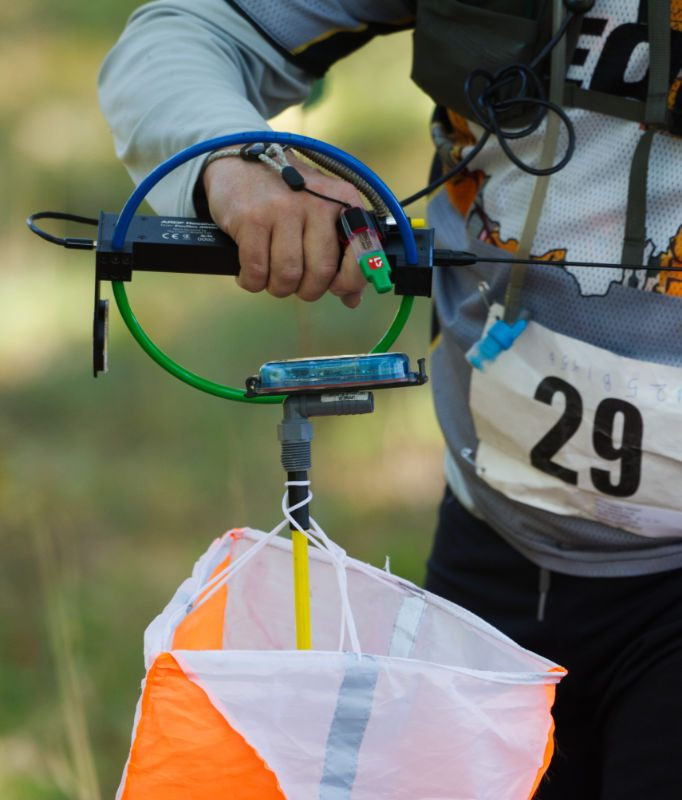
144 MHz 입문자가 가장 많이 쓰는 수신기는 소자 세 개짜리 야기 안테나(Yagi antenna)가 달린 것입니다. 붐(Boom) 위에 소자 세 개가 나란히 있고, 길이가 조금씩 다릅니다. 가장 긴 뒤쪽 소자가 반사기(Reflector), 가운데 수신기와 연결된 소자가 방사기(Driven element), 가장 짧은 앞쪽 소자가 도파기(Director)입니다. 도파기 쪽이 안테나의 앞입니다.
소자를 지면과 수평으로 들고 몸을 돌려 소리가 가장 큰 방향을 찾습니다. 도파기가 가리키는 쪽이 송신기 방향입니다. 3소자 야기의 주 로브는 55–60° 안팎으로 넓은 편이라, 최대점 근처를 좌우로 흔들어 소리가 같아지는 두 지점의 가운데를 잡으면 더 정확합니다. 뒤쪽은 앞쪽보다 15–20 dB가량 작지만 송신기 가까이에서는 뒤로도 꽤 들리니, 반대 방향과 크기를 꼭 비교합니다.
시뮬레이터의 야기 패턴은 일반적인 3소자 야기 값(주 로브 폭 약 55°, 전후방비 약 18 dB)으로 그린 예시입니다. 실제 값은 안테나마다 다릅니다.
수신기의 감도(Gain) 또는 감쇠기(Attenuator) 손잡이는 소리 크기를 정하는 손잡이가 아닙니다. 방향을 정확히 재기 위한 손잡이입니다. 감도가 너무 높으면 신호가 수신기 안에서 꽉 차 버려(포화), 안테나를 조금 돌려도 소리가 줄지 않습니다. 그러면 피크가 넓게 퍼지고, 야기는 앞뒤 구별까지 흐려집니다.
위의 두 시뮬레이터에서 감도를 7로 올려 보십시오. 패턴 위에 점선 원이 나타나는데, 그 바깥은 모두 최대 소리로 들려 구별이 안 되는 영역입니다. 감도를 낮추면 원이 바깥으로 물러나며 다시 방향이 또렷해집니다.
그래서 처음에는 감도를 최대로 올려 신호를 잡고, 이후로는 소리가 또렷하되 귀가 아프지 않을 만큼 계속 낮춰 갑니다. 송신기에 가까워질수록 감도는 내려가므로, 손잡이 위치가 거리를 짐작하는 단서가 됩니다. 예를 들어 SUPERFOX 설명서는 3.5 MHz용(3 W 송신기 기준) 감도 3에서 약 300 m, 2에서 약 100 m, 144 MHz용 감도 3에서 약 200 m, 2에서 약 80 m를 듭니다.
거리 감각은 송신 출력, 지형, 수신기마다 다릅니다. 연습 경기에서 내 수신기의 손잡이 위치와 실제 거리를 함께 기억해 두면 가장 정확한 기준이 됩니다.
기종마다 모양은 달라도 방향 탐지 수신기의 조작은 거의 같습니다. 주파수, 감도, 휩 버튼, 헤드폰 네 가지만 알면 됩니다.
하는 일: 들을 송신기 주파수를 고릅니다.
언제: 출발 전에 대회 공지 주파수 근처에서 소리가 가장 크고 맑은 곳에 맞추고, 경기 중에는 거의 건드리지 않습니다.
하는 일: 소리 크기가 아니라 방향을 날카롭게 만듭니다.
언제: 처음엔 최대로 신호를 잡고, 이후 또렷하되 귀가 아프지 않을 만큼 계속 낮춥니다.
하는 일: 8자 패턴을 카디오이드로 바꿔 앞뒤를 가립니다.
언제: 널로 축을 찾은 뒤 잠깐 눌러 확인합니다. 누르는 동안만 켜지는 기종이 많습니다.
하는 일: 작은 신호를 듣고, 기종에 따라 전원 스위치 역할도 합니다.
언제: 출발 전 단단히 꽂고 줄을 몸에 붙여 덤불에 걸리지 않게 합니다.
SUPERFOX 수신기(3.5MX, 145MX)의 조작판, 메모리, 타이머, 전자 나침반, 배터리 관리는 부록 A에 따로 정리했습니다.
색, 축척, 등고선, 꼭 알아야 할 기호, 자북선과 지도 정치
ARDF는 오리엔티어링 지도를 씁니다. 국제오리엔티어링연맹(IOF)의 지도 규격(클래식·폭스오링은 ISOM 2017, 스프린트는 ISSprOM 2019)에 맞춰 그린 지도로, 일반 등산 지도보다 훨씬 자세합니다. 작은 바위와 구덩이까지 표시하고, 숲을 얼마나 빨리 달릴 수 있는지까지 색으로 나타냅니다. 여기에 경기 정보인 출발, 결승 비컨, 결승선이 보라색으로 덧인쇄됩니다.
오리엔티어링 지도는 색마다 맡은 일이 정해져 있습니다. 기호를 다 외우기 전에 색만 알아도 지도의 절반은 읽힙니다.
흰색이 "아무것도 없음"이 아니라 "달리기 좋은 숲"이라는 점이 일반 지도와 가장 다릅니다.
클래식 지도는 보통 1:10,000이나 1:15,000이고, 국내 클래식 경기는 주로 1:15,000을 씁니다. 1:10,000이면 지도 위 1 cm가 실제 100 m, 1:15,000이면 150 m입니다. 스프린트는 1:4,000이나 1:5,000으로 훨씬 크게 그립니다. 같은 1 cm라도 축척에 따라 달리는 거리가 크게 다르니, 지도를 받으면 축척부터 확인합니다.
세로로 그은 자북선(Magnetic north lines)도 거리 어림에 씁니다. 국내 1:15,000 클래식 지도는 자북선 한 칸이 500 m라서, 반 칸이면 250 m, 5분의 1 칸이면 100 m입니다. 1:10,000 지도는 한 칸이 300 m인 경우도 있으니, 지도를 받으면 축척 막대와 한 번 비교해 둡니다.
등고선(Contour)은 같은 높이를 이은 갈색 선입니다. 오리엔티어링 지도는 보통 5 m 간격으로 그리고, 다섯 줄마다 굵은 계곡선(Index contour)을 넣습니다. 선이 촘촘하면 가파르고, 성기면 완만합니다. 등고선이 바깥으로 불룩하게 튀어나온 곳은 능선(Spur), 안쪽으로 파고든 곳은 골짜기(Re-entrant)입니다.
3장에서 본 것처럼 능선은 144 MHz 신호를 받기 좋은 자리이고, 골짜기는 반사파가 섞이기 쉬운 자리입니다. 등고선으로 능선과 골짜기를 구별할 줄 알면 방위를 잴 곳을 고르기 쉬워집니다.
숲은 얼마나 빨리 달릴 수 있는지에 따라 흰색에서 진한 초록까지 나뉩니다. 직선 거리가 짧아도 진한 초록을 가로지르면 오히려 늦어집니다. 길이나 흰 숲으로 돌아가는 편이 빠른 경우가 많습니다.
입문자가 경기에서 자주 마주치는 기호만 골랐습니다. 무엇인지보다 "달릴 수 있는가, 위치를 확인할 수 있는가, 전파에 영향을 주는가"를 함께 기억하면 실전에 바로 쓸 수 있습니다.
같은 높이를 이은 선. 5 m 간격, 다섯 줄마다 굵은 선.
등고선이 낮은 쪽으로 불룩하면 능선, 높은 쪽으로 파고들면 골짜기. 능선은 방위 재기 좋은 자리.
닫힌 작은 등고선이나 갈색 점. 멀리서도 보이는 위치 확인 기준.
갈색 반원은 움푹한 땅, V자는 구덩이. 송신기를 숨기기 좋은 곳.
빗물이 판 도랑. 덤불에 가려 발을 다치기 쉬우니 조심.
지날 수 없음. 눈금은 낮은 쪽. 144 MHz 반사파가 생기는 곳.
사람 키쯤 되는 독립 바위. 근처 송신기를 찾을 때 좋은 기준점.
삼각형이 모인 곳. 달리기 매우 느림, 되도록 돌아감.
파란 면에 검은 테두리. 무조건 둘레로 돌아감.
파란 선. 굵을수록 큼. 다리나 얕은 곳을 찾아 건넘.
개울을 건너는 곳. 건널 수 없는 물에서는 다리를 찾아 경로를 짬.
파란 가로줄. 발이 빠져 느림. 테두리가 있으면 건널 수 없음.
풀밭, 공터. 시야가 트이고 가장 빨리 달림. 방위 재기 좋은 곳.
흰색 = 달리기 쉬운 숲.
초록이 진할수록 느림. 진한 초록은 거의 지날 수 없음.
검은 선. 굵기와 점선으로 크기 구분. 숲을 가로지르기보다 빠른 경우가 많음.
3.5 MHz 신호를 다시 방사해 방향이 틀어짐. 떨어져서 잼.
굵고 눈금이 양쪽이면 넘으면 안 됨. 출입문을 찾음.
검은 면. 확실한 위치 확인 기준. 들어갈 수 없음.
삼각형. 지도를 받으면 여기서부터 방위를 잼.
원. 클래식은 비컨만, 폭스오링은 모든 송신기 위치.
점선은 반드시 따라가야 하는 길. 이중 원이 결승.
넘을 수 없는 울타리나 금지 구역에 열어 둔 통로. 여기로만 지남.
보라 세로 줄무늬. 들어가면 실격. 지나서도 안 됨.
큰 그림은 알아보기 쉽게 키운 것이고, 옆의 작은 그림이 1:10,000 지도에 인쇄되는 대략적인 크기입니다. 기호 모양은 IOF 규격을 단순하게 옮겨 그린 것입니다. 정확한 기호표는 대회 지도의 범례와 ISOM 2017 · ISSprOM 2019 원문을 따릅니다.
오리엔티어링 지도의 세로줄은 진북이 아니라 자북(나침반 바늘이 가리키는 북쪽)을 가리키는 자북선(Magnetic north lines)입니다. 지도를 만들 때 진북과 자북의 차이(편차)만큼 미리 돌려서 그렸기 때문에, 선수는 따로 편차를 계산할 필요가 없습니다.
지도 정치(Setting the map)는 지도의 자북선을 나침반 바늘과 나란히 맞추는 일입니다. 그러면 지도 위의 방향과 실제 땅의 방향이 같아져서, 지도에서 오른쪽에 있는 능선이 실제로도 오른쪽에 보입니다. 수신기로 잰 방향을 지도에 그대로 옮겨 그을 수 있는 것도 지도를 정치했을 때입니다.
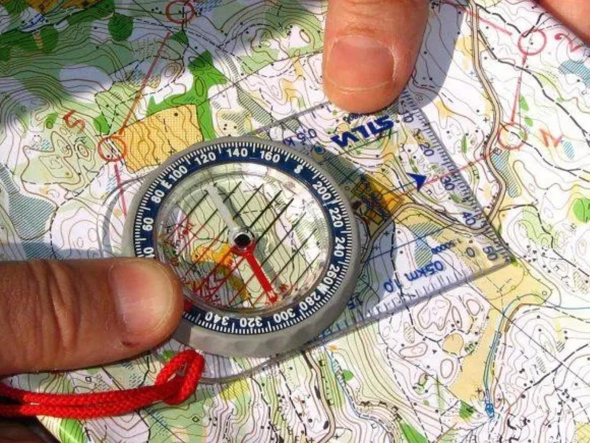
출발 전 준비부터 첫 5분, 순서 정하기, 교차 방위, 근접 탐색, 결승까지
앞 장에서 익힌 것들을 경기 순서대로 엮습니다. 아래 절차는 클래식 경기를 기준으로 하지만, 스프린트와 폭스오링에도 대부분 그대로 쓸 수 있습니다. ARDF가 "달리면서 두는 체스"라고 불리는 이유는, 빨리 달리는 것만큼 언제 멈춰서 무엇을 잴지가 기록을 좌우하기 때문입니다.
국제 대회에서는 경기장에 도착하면 수신기를 심판에게 맡기고, 모든 수신기가 모일 때까지 송신기는 켜지지 않습니다. 출발 10분 전 출발 대기 구역(Pre-start)에 들어가면 수신기와 지도를 함께 돌려받습니다. 국내 대회는 진행이 조금 다를 수 있으니 요강을 확인합니다. 출발 구역 게시판에는 송신기 주파수, 부문별 배정 송신기, 시간 제한이 붙어 있습니다.
배정 송신기 부문마다 찾아야 할 송신기가 다릅니다. 내 부문에 배정되지 않은 송신기를 찾아가면 시간만 버립니다. 지도 모서리나 게시판의 배정표를 꼭 확인합니다.
출발 신호가 울리면 수신기를 켜고 출발 통로(최대 250 m)를 달린 뒤 탐색을 시작합니다. 클래식에서 가장 중요한 순간은 출발 직후의 첫 5분입니다. 다섯 송신기가 1분씩 한 바퀴 돌며 발신하므로, 통로 끝에서 5분만 들으면 모든 송신기의 방향을 한 번씩 잴 수 있습니다.
송신기마다 방향을 재서 지도 위 내 위치에서 방위선을 긋고, 소리 크기와 감도 위치로 대략의 거리를 함께 적어 둡니다. 이 한 장의 그림이 경기 전체의 작전 지도가 됩니다.
방위선 다섯 개가 그어지면 찾을 순서를 정합니다. 기준은 단순합니다. 같은 길을 되돌아가지 않고, 마지막 송신기가 결승 비컨 쪽에 오도록 고리를 그립니다. 가까운 송신기부터 무작정 찾으면 오가는 거리가 늘어납니다.
순서를 정할 때 송신 주기도 함께 생각합니다. 어떤 송신기에 다가갔을 때 마침 그 송신기의 1분이 오면 가장 좋습니다. 다가가는 중에 발신이 끝났더라도 다른 송신기로 옮기지 말고, 그 송신기가 다시 발신할 때까지 근처에서 기다리는 편이 유리합니다. 다른 송신기를 오가는 거리가 더 손해이기 때문입니다.
순위는 찾은 개수가 먼저입니다. 국제 규정에서는 찾은 송신기 수가 많을수록 앞서고, 수가 같을 때만 시간으로 가립니다. 시간 제한을 넘기면 순위에 들지 못합니다. 남은 시간이 빠듯하면 먼 송신기 하나를 포기하고 제한 시간 안에 들어오는 것이 낫습니다.
방위선 하나만으로는 송신기가 선 위 어디쯤인지 모릅니다. 송신기 쪽으로 가다가 그 송신기의 차례가 다시 오면, 처음 잰 곳에서 충분히 떨어진 곳에서 한 번 더 잽니다. 두 방위선이 만나는 곳이 송신기 위치입니다.
방향을 잴 때는 늘 몇 도의 오차가 있습니다. 그래서 실제로는 선이 아니라 좁은 부채꼴이고, 두 부채꼴이 겹치는 곳이 송신기가 있을 만한 범위입니다. 두 방위선이 거의 나란하면 겹치는 곳이 길쭉하게 늘어나고, 90°에 가깝게 만나면 작고 또렷해집니다. 아래 슬라이더로 두 번째 측정 위치를 옮겨 보십시오.
144 MHz에서는 두 지점 모두 능선이나 트인 곳처럼 송신기가 보일 만한 자리를 고릅니다. 3장에서 본 것처럼 골짜기에서 잰 방위선은 반사파일 수 있습니다. 세 번째 방위선이 같은 곳을 지나면 확신해도 좋습니다.
송신기에 가까워지면 신호가 아주 세져서 감도를 최대한 낮춰도 사방에서 크게 들립니다. 이때가 가장 시간을 잃기 쉬운 구간입니다. 감도를 0–1까지 내리고, 3.5 MHz는 널이 다시 날카로워지는지, 144 MHz는 소자를 수평으로 들고 피크가 분명한지 확인하며 다가갑니다.
송신기는 덤불, 구덩이, 바위 뒤처럼 눈에 잘 띄지 않는 곳에 있습니다. 지도에서 작은 봉우리, 구덩이, 바위 같은 기준점을 찾아 그 주변을 살핍니다. 클래식의 깃발은 안테나에서 4 m 안에 있으니, 송신기 소리가 바로 앞에서 들리면 고개를 들어 주황·흰색 깃발을 찾습니다.
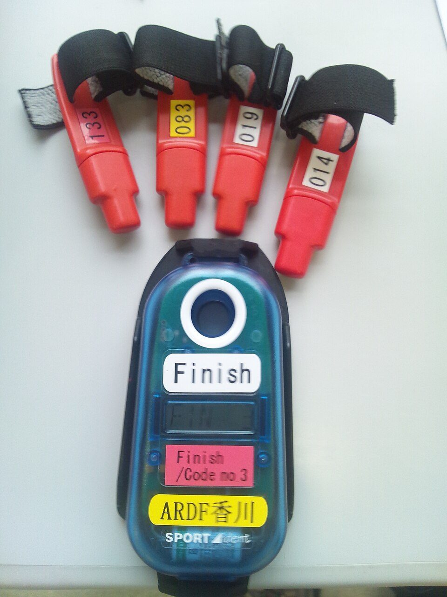
배정된 송신기를 모두 찾으면 결승 비컨(MO)의 주파수로 바꿔 소리를 따라갑니다. 비컨은 쉬지 않고 발신하므로 바로 방향을 잡을 수 있습니다. 비컨에서도 송신기와 똑같이 SI 카드로 기록하고, 테이프로 표시된 결승 통로를 따라 결승선까지 달립니다. 결승 통로는 비컨에서 결승선 쪽으로만 달릴 수 있습니다.
결승선에서 마지막으로 SI 카드를 기록하면 경기가 끝납니다. 기록 장치에서 카드를 읽으면 찾은 송신기와 시간이 바로 나옵니다. 도중에 포기하더라도 반드시 결승에 들러 알립니다. 심판이 선수 전원이 돌아왔는지 확인해야 하기 때문입니다.
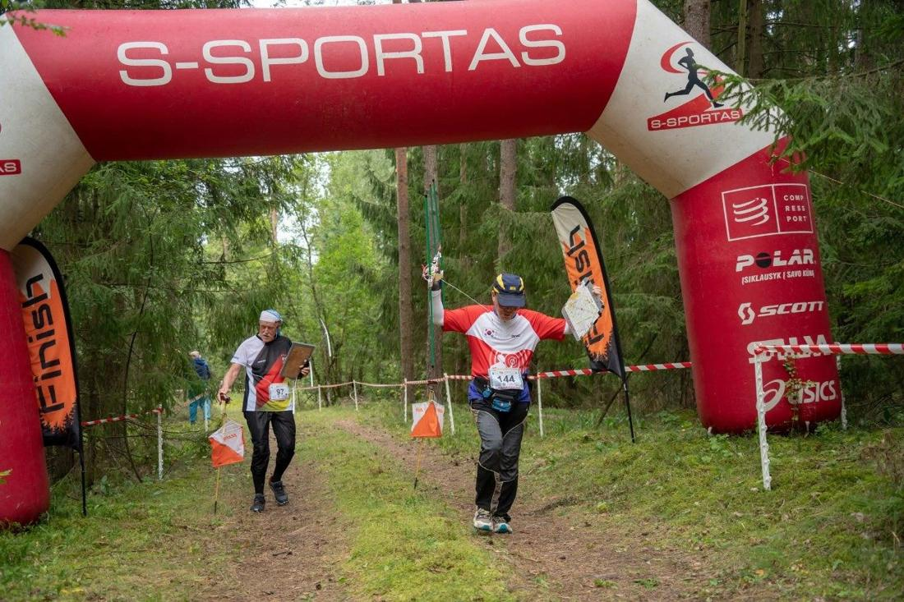
처음 나가기 전, 경기 규칙, 경기 중에 생기는 문제
처음 ARDF를 접하는 분들이 자주 묻는 질문을 모았습니다. 질문을 누르면 답이 펼쳐집니다. 규칙에 관한 답은 국제 규정(IARU ARDF Rules Part B, 2020)을 기준으로 했고, 국내 대회는 요강이 우선하니 함께 확인합니다.
보통은 필요 없습니다. 선수는 송신기 신호를 듣기만 하고 전파를 내보내지 않기 때문입니다. 국제 규정에서도 무선 자격증은 국제 심판의 조건이지 선수의 조건이 아닙니다. 다만 대회마다 참가 자격이 다를 수 있으니 요강을 확인합니다.
입문 대회나 체험 행사에서는 수신기를 빌려주는 경우가 많습니다. 신청할 때 대여가 되는지, 어느 대역 수신기인지 주최 측에 물어봅니다. 몇 번 나가 본 뒤에 내 수신기를 고르면, 어떤 조작이 편한지 알고 살 수 있습니다.
대역보다 대회에 먼저 나가 보는 것이 중요합니다. 대회에서 수신기를 빌려주니, 어느 대역이든 가까운 대회부터 참여해 봅니다. 두 대역의 차이는 3장에서 그림으로 비교했습니다.
됩니다. 순위는 찾은 송신기 수가 먼저이고 시간은 그다음입니다. 걸어서 꼼꼼히 재는 선수가 무작정 달린 선수보다 많이 찾는 일이 흔합니다. 부문도 19세 이하부터 70세 이상까지 나이별로 나뉘고, 나이가 많은 부문일수록 코스가 짧아집니다. 국제 규정 기준으로 M21은 9~12 km, M70은 4~6 km입니다.
국제 규정은 주최 측이 따로 정하지 않으면 옷과 신발을 자유롭게 고르게 합니다. 숲속 덤불과 가시를 생각하면 긴소매와 긴바지, 바닥이 미끄럽지 않은 트레일 신발이 좋습니다. 지도는 비닐에 넣어 젖지 않게 하고, 헤드폰 줄이 나뭇가지에 걸리지 않게 옷 안으로 정리합니다.
아닙니다. 내 부문에 배정된 송신기라면 어떤 순서로 찾아도 됩니다. 순서를 잘 짜는 것이 실력입니다. 결승 비컨만은 마지막에 들르고, 비컨을 지나 결승 통로를 따라 결승선으로 들어갑니다.
클래식과 스프린트 지도에는 출발, 결승 비컨, 결승선만 있고 송신기는 없습니다. 폭스오링은 예외로, 지도에 원이 그려져 있고 송신기는 그 원 안 어딘가에 있습니다. 송신기 출력이 아주 약해서 원 가까이 가야 들립니다.
같은 쪽으로 가게 되는 것까지 막을 수는 없지만, 누구와도 도움을 주고받는 것은 금지입니다. 말이나 손짓으로 방향을 알려 주거나 물어보면 안 됩니다. 송신기 근처의 운영 요원도 아무 정보를 주지 않습니다. 다친 선수를 돕는 것만은 예외이자 모든 선수의 의무이고, 그 때문에 실격되지 않습니다.
국제 규정은 경기 당일 출발 구역과 경기 구역에서 통신 기기를 쓰는 것을 금지하고, 어기면 실격입니다. 미국 규정처럼 안전용 휴대폰이나 기록용 GPS 시계를 지니는 것은 허용하되, 길 찾기나 통신에 쓰지 못하게 하는 대회도 있습니다. 어느 쪽이든 경기 중에 화면을 보고 길을 찾으면 안 됩니다. 지닐 수 있는지는 요강으로 확인합니다.
규칙을 어기거나 규칙 위반으로 이득을 본 선수는 실격입니다. 입문자가 조심할 것은 도움을 주고받는 것, 차나 자전거 같은 탈것을 이용하는 것, 출입 금지 구역에 들어가는 것, 통신 기기를 쓰는 것, 기록 카드를 잃어버리는 것입니다. 시간 제한을 넘긴 것은 실격과 다르게 순위에 들지 못하는 것으로 처리합니다.
클래식은 한 송신기가 5분 중 1분만 발신하니, 먼저 1분 넘게 기다려 봅니다. 그래도 안 들리면 주파수가 맞는지, 감도가 너무 낮지 않은지, 헤드폰이 제대로 꽂혔는지 확인합니다. 3.5 MHz는 휩 안테나가 꽂혀 있는지도 봅니다.
멈춰서 지도를 정치하고, 마지막으로 확실했던 곳을 떠올립니다. 큰 길, 개울, 능선처럼 지도에서 쉽게 찾을 수 있는 지형까지 나가 위치를 다시 잡습니다. 그래도 모르겠으면 결승 비컨 주파수로 바꿉니다. 비컨은 모든 선수가 들어올 때까지 계속 발신하니, 소리를 따라가면 결승에 닿습니다.
카드는 확인 신호가 날 때까지 기록 장치에 꽂고 있어야 합니다. 다시 꽂아도 신호가 없을 때만 송신기에 함께 있는 예비 기록 장치를 씁니다. 바늘 펀치라면 지도나 번호표에 구멍을 찍습니다. 카드를 잃어버리면 실격이니 손가락에 단단히 끼웁니다.
국제 규정에서는 심판장이 경기를 즉시 중단할 수 있습니다. 이때 결승 비컨을 뺀 모든 송신기가 꺼지고, 비컨은 모든 선수가 들어올 때까지 계속 발신합니다. 송신기가 갑자기 다 조용해지고 비컨만 들리면, 비컨을 따라 결승으로 돌아갑니다.
그만둘 때도 반드시 결승으로 가서 바로 알립니다. 주최 측은 모든 선수가 돌아왔는지 결승 기록으로 확인하므로, 알리지 않고 돌아가면 숲에서 수색이 시작될 수 있습니다. 경기를 마친 뒤에는 다른 선수를 돕거나 경기에 영향을 주면 안 됩니다.
연습 순서, 장비 갖추기, 정보 찾기, 한 장 요약, 용어 사전
여기까지 읽었다면 ARDF의 규칙, 전파, 수신기, 지도, 경기 절차를 한 번씩 살펴본 셈입니다. 이제 남은 것은 숲에서 직접 송신기를 찾아보는 일입니다. 이 장에서는 무엇부터 연습하고, 장비를 어떤 순서로 갖추고, 어디서 정보를 얻는지 정리합니다.
가장 좋은 연습은 대회에 직접 나가 코스 전체를 돌아보는 것입니다. 출발부터 결승까지 한 번 겪어 보면, 무엇을 더 익혀야 할지 스스로 보입니다. 장비가 없는 입문자에게는 대회에서 수신기를 빌려주니, 장비부터 갖출 필요도 없습니다. 대회와 대회 사이에는 그때 부족했던 부분을 골라 연습합니다.
대회 사이 연습은 짝과 함께 하면 쉽습니다. 한 사람이 송신기를 숨기고 다른 사람이 찾습니다. 운동장에서 방향 재기, 공원에서 감도를 낮추며 다가가기, 오리엔티어링 행사에서 지도 읽기처럼 한 가지씩 골라 연습합니다. GPS 기록이 있다면 ARDF 3D 코스 리뷰처럼 GPX 파일을 지도 위에서 재생하는 도구로 돌아볼 수 있습니다.
처음에는 빌려 쓰고, 계속하겠다고 마음먹으면 하나씩 장만합니다. 아래는 입문자에게 권하는 순서입니다. 수신기는 이 가이드의 부록 A처럼 OK2BWN SUPERFOX가 많이 쓰이고, 직접 만드는 키트도 있습니다.
방위선을 긋는 데 꼭 필요하고 값도 쌉니다. 오리엔티어링용 판형이나 엄지 나침반이 편합니다.
3.5 MHz는 페라이트 막대와 휩, 144 MHz는 3소자 야기가 기본입니다. 대회에서 빌려 써 보고, 자주 나가는 경기에 맞춰 장만합니다.
귀를 덮는 헤드폰은 숲에서 작은 소리를 듣는 데 유리합니다. 지도 비닐과 유성펜은 비 오는 날에도 방위선을 남깁니다.
짝 연습을 하려면 하나쯤 있으면 좋습니다. 송신기를 쓰려면 무선국 자격증과 허가가 필요하니, 동호회 장비를 빌리는 편이 쉽습니다.
국내 대회 일정과 수신기 대여는 위의 밴드에서 공지를 확인하고 물어보는 것이 가장 빠릅니다. 오리엔티어링 행사도 지도 읽기 연습으로 좋습니다.
출발 전에 한 번 더 볼 내용을 표 하나에 모았습니다.
| 항목 | 3.5 MHz 80 m | 144 MHz 2 m |
|---|---|---|
| 안테나 | 페라이트 막대 + 휩 | 3소자 야기 |
| 방향 잡는 법 | 널(가장 조용한 방향)로 축 찾고, 휩으로 앞뒤 가리기 | 피크(가장 큰 방향)로 바로 가리킴 |
| 반사 | 적음, 들리는 방향을 믿어도 됨 | 골짜기, 능선, 큰 건물에서 반사파 주의 |
| 잴 곳 | 어디서나 비교적 정확 | 능선이나 트인 곳에서 |
| 가까워지면 | 감도를 낮추며 다가가기, 0~1까지 내려도 크면 바로 근처 | |
| 클래식 송신기 | 부호 | 발신 (5분 주기) |
|---|---|---|
| 1번 | MOE −− −−− · | 0:00–1:00 |
| 2번 | MOI −− −−− ·· | 1:00–2:00 |
| 3번 | MOS −− −−− ··· | 2:00–3:00 |
| 4번 | MOH −− −−− ···· | 3:00–4:00 |
| 5번 | MO5 −− −−− ····· | 4:00–5:00 |
| 결승 비컨 | MO −− −−− | 계속 발신, 다른 주파수 |
OK2BWN 설명서(3.5M 17W04, 145MX 21W04)와 제품 사양표를 바탕으로 정리한 조작, 메모리, 나침반, 배터리 관리
SUPERFOX는 체코의 OK2BWN(Jiří Mareček)이 만드는 방향 탐지 수신기로, 3.5 MHz용과 144 MHz용이 있습니다. 3.5 MHz용은 국내 입문자도 많이 쓰고, 144 MHz용 145MX는 세계선수권에서 많은 메달을 딴 기종입니다. A-1은 3.5 MHz용, A-2부터 A-6은 144 MHz용 145MX의 사용법이고, 두 기종의 사양은 A-7에서 비교합니다. 145MX는 본문의 3소자 야기와 달리 소자 두 개짜리 HB9CV 안테나를 쓰고, 신호 처리로 방향 패턴을 다듬는 기능이 들어 있습니다.
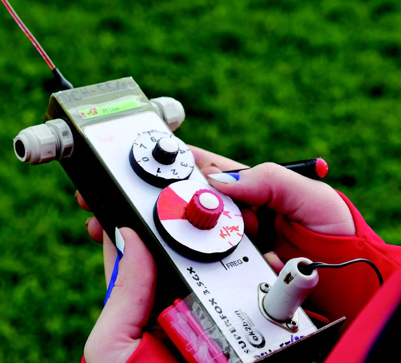
SUPERFOX 3.5는 손바닥만 한 상자(100 × 180 mm) 안에 대칭형 페라이트 막대가 들어 있고, 위쪽 나사 구멍에 휩을 끼워 씁니다. 조작은 FREQ(주파수), GAIN(감도) 다이얼과 은색 ANT 버튼이 전부입니다. ANT 버튼을 놓으면 8자 패턴, 누르고 있으면 휩이 더해진 카디오이드(Cardioid, 심장 모양) 패턴입니다. 아래쪽에는 나침반 거치대를 다는 나사 구멍 두 개(간격 35 mm)가 있고, 전자 나침반 FINDER09를 단 경우 오른쪽에 파란 버튼이 있습니다.
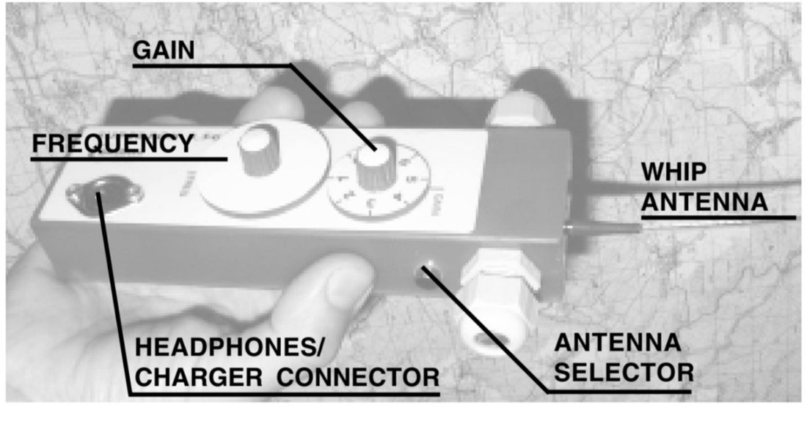
사진은 이전 아날로그 모델인 3.5GX입니다. 3.5M은 GX를 디지털로 바꾼 모델로, 주파수·감도 다이얼, 옆면 ANT 버튼, 위쪽 휩이라는 기본 배치는 같습니다. GX 설명서도 "수신기를 세워 들고 소리가 가장 약한 방향을 찾은 뒤, 버튼을 누른 채 좌우 90°로 돌려 더 크게 들리는 쪽을 고른다"고 설명합니다.
휩이 위로 가게, 조작판이 내 쪽을 보게 세워 들고 몸을 돌려 소리가 사라지는 널을 찾습니다. 그다음 ANT 버튼을 누른 채 반 바퀴 돌려 봅니다. ANT를 누르면 내가 바라보는 앞쪽(수신기 뒷면 방향)이 크게 들리고, 내 쪽은 소리가 사라집니다. 소리가 크게 들릴 때 내가 바라보는 쪽이 송신기입니다.
충전은 전용 충전기(N40)로 하고, 노란 표시등이 꺼지면 완료입니다. 145MX와 마찬가지로 활동이 끝나면 충전해 두고, 이미 충분히 차 있으면 충전이 시작되지 않습니다. 켤 때 헤드폰으로 배터리 상태를 알려 줍니다. 출처는 SUPERFOX 3.5M 설명서(SF35M Rev. 17W04)와 OK2BWN 제품 사양표입니다.
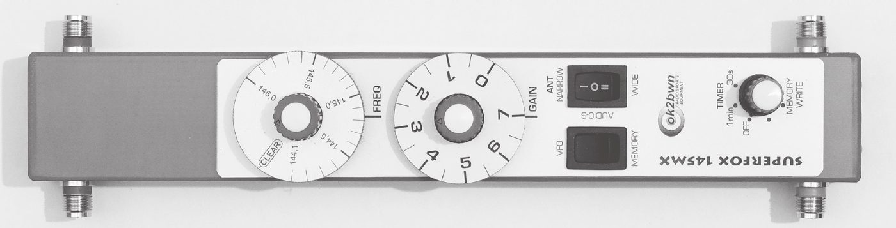
1 2 3 4 5 6 7 8◀ 앞 · 파란 소자뒤 · 빨간 소자 ▶
ANT 스위치를 가운데에 두면 음성 S미터(Audio S-meter)가 켜집니다. 보통의 모스 소리 대신, 신호가 셀수록 높아지는 음이 들립니다. 사람의 귀는 소리 크기보다 음높이 차이를 더 예민하게 구별하기 때문에, 피크의 정확한 위치를 잡을 때 유용합니다.
제조사가 밝힌 주 로브 폭(−3 dB)은 WIDE 30°, NARROW 15°이고, 전후방비는 40 dB 이상입니다. 3소자 야기보다 앞쪽 빔이 훨씬 좁고 뒤쪽이 깊게 줄어듭니다. 반사파가 섞여 최대점이 흐릿할 때 NARROW가 도움이 되고, 그래도 분명하지 않으면 수십 미터 자리를 옮기라고 설명서는 권합니다.
음성 S미터 위치의 패턴은 WIDE와 같게 그렸습니다. 소리 크기는 데시벨 값을 귀에 맞게 바꾼 근사입니다.
주파수를 최대 6개 채널에 저장해 두고 경기 중에 건너뛰며 쓸 수 있습니다. 저장한 내용은 전원을 꺼도 남아 있습니다.
타이머는 헤드폰을 꽂는 순간부터 시간을 셉니다. TIMER를 1 min이나 30 s에 두면 매 1분이나 30초가 끝나기 10초 전에 신호음(· — ·)이 울립니다. 클래식 경기의 1분 발신이 곧 끝난다는 것을 시계를 보지 않고 알 수 있습니다. OFF로 두어도 시계는 계속 돌아갑니다.
선택 사양인 전자 나침반 FINDER09는 방위를 기억해 두었다가 소리로 알려 줍니다. 오른쪽 옆의 파란 버튼을 짧게 누르면 지금 겨눈 방향이 저장되고 짧은 떨림음이 납니다. 송신이 끝난 뒤 달리면서 버튼을 길게 누르고 있으면, 저장한 방향과 얼마나 어긋났는지가 음으로 들립니다.
나침반은 기울기 보정 센서가 없어서, 수신기가 기운 만큼 방위가 틀어질 수 있습니다. 저장하거나 추적할 때는 수신기를 수평으로 듭니다. 달리는 사람의 흔들림 때문에 일부러 기울기 보정을 넣지 않았다고 설명서는 밝힙니다. 저장한 방위는 전원을 끄면 지워집니다.
전원 스위치가 없습니다. 헤드폰 플러그를 꽂으면 켜지고 뽑으면 꺼집니다. 플러그 안에서 4번과 5번 핀이 이어져 있어, 꽂는 순간 배터리 전원이 수신기 회로로 들어갑니다. 경기 중에 플러그가 빠지면 수신기도 꺼지므로 단단히 꽂습니다.
배터리가 20 %까지 내려가면 타이머의 끝 알림 소리(· — ·)가 짧은 점(·) 하나로 바뀝니다. 20 %는 아직 1–2시간 쓸 수 있는 양입니다.
배터리는 리튬 폴리머(8.4 V, 500 mAh)이고 완전 충전으로 약 10시간 씁니다. 충전은 반드시 전용 충전기(N41)로 하고, 제조사는 경기나 훈련이 끝나면 충전해 두라고 권합니다. 충전기 표시등이 주황색이면 충전 중, 초록색이면 완료입니다. 이미 충분히 차 있으면 충전이 시작되지 않는데, 이때는 다음 경기 몇 번을 치를 만큼 남아 있다는 뜻입니다.
몸체는 생활 방수(IP64) 수준입니다. 젖으면 마른 천으로 닦고 상온에서 말리며, 난로 같은 강한 열은 피합니다. 뒷덮개를 연 적이 있다면 닫은 뒤 테이프로라도 다시 밀봉합니다. 안테나 소자 단자와 헤드폰 단자는 늘 마르고 깨끗하게 둡니다.
| 항목 | SUPERFOX 3.5MX | SUPERFOX 145MX |
|---|---|---|
| 주파수 범위 | 3.49 – 3.66 MHz | 144.0 – 146.1 MHz |
| 수신 모드 | CW (A1) | AM (A2A) |
| 안테나 | 대칭형 페라이트 + 위상 휩 | 대칭형 HB9CV, 분리형 소자 (앞 파랑 2, 뒤 빨강 2) |
| 전후방비 | 40 dB | 40 dB 이상 |
| 주 로브 폭 (−3 dB) | 10° (최소) | WIDE 30°, NARROW 15° |
| 감도 | −135 dBm (0.04 µV) | −110 dBm (0.7 µV) |
| IF 대역폭 (−3 / −60 dB) | 1 kHz / 4 kHz | 100 kHz / 400 kHz |
| 감도 조절 범위 | 120 dB | 120 dB 이상 |
| 채널 메모리 · 타이머 | 6채널 · 30초 / 1분 | 6채널 · 30초 / 1분 |
| 전원 | Li-Pol 8 V 500 mAh, 10시간 이상 | Li-Pol 8.4 V 500 mAh, 10시간 이상 |
| 방수 | IP64 (생활 방수) | IP64 (생활 방수) |
| 크기 · 무게 | 100 × 180 × 50 mm, 300 g | 조립 1040 × 290 × 50 mm, 460 g |
| 사용 온도 | −10 ~ +60 °C | −10 ~ +60 °C |
| 선택 부품 | FINDER09 전자 나침반, SL34 헤드폰, N41 충전기, T840 배터리 시험기 | |
3.5MX는 OK2BWN 제품 사양표, 145MX는 145MX 설명서 기준입니다. 이전 모델인 3.5M 설명서에는 더블 컨버전, 7.4 V 배터리, IP63, 두께 30 mm, N40 충전기로 적혀 있습니다. 145MX의 IF 대역폭은 제품 사양표에는 50 / 150 kHz로 적혀 있어 두 자료가 다릅니다.
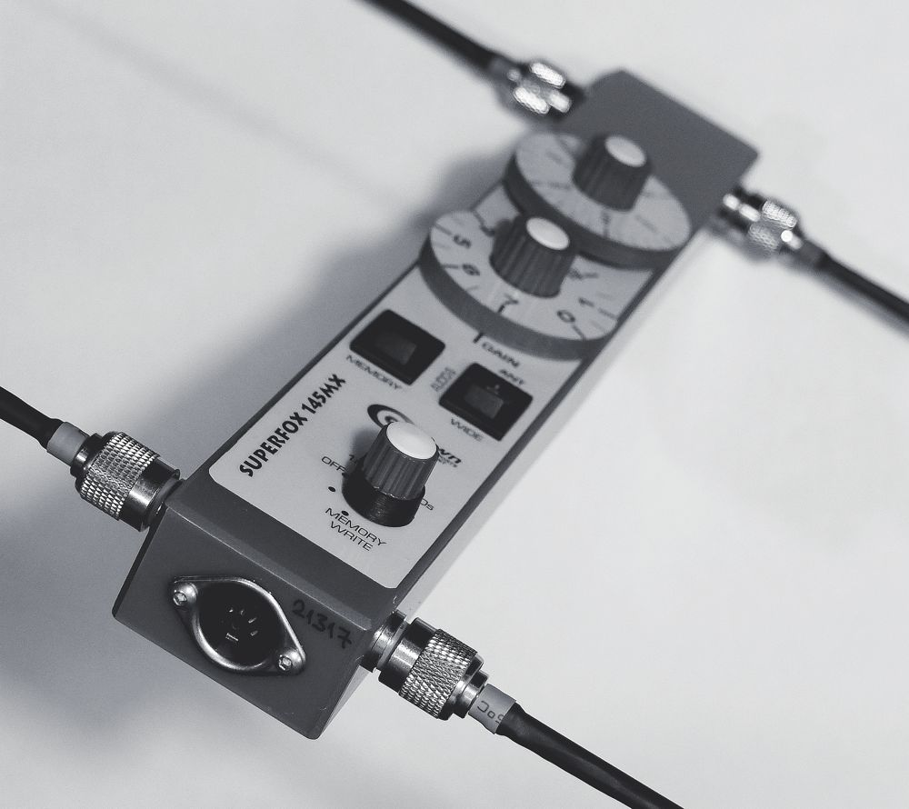